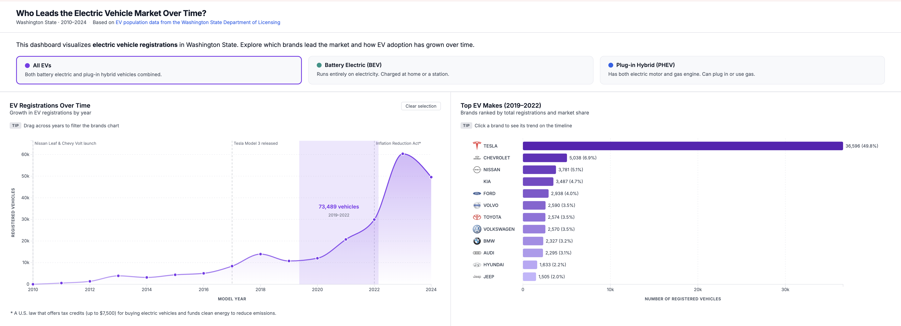
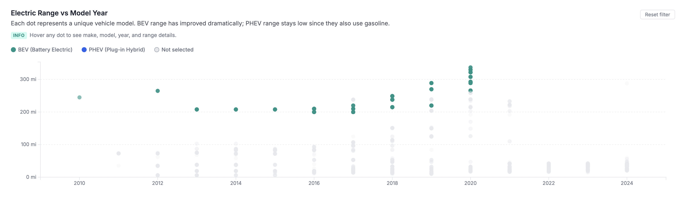
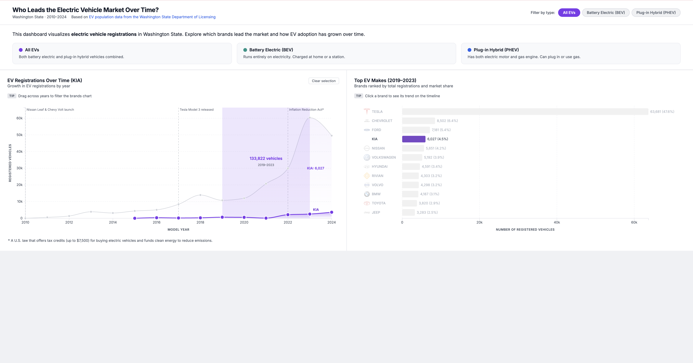
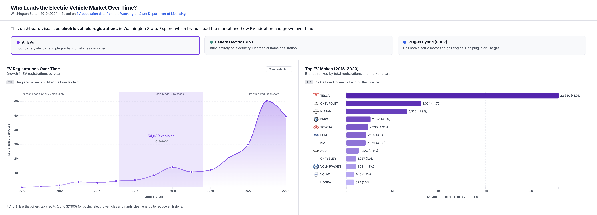
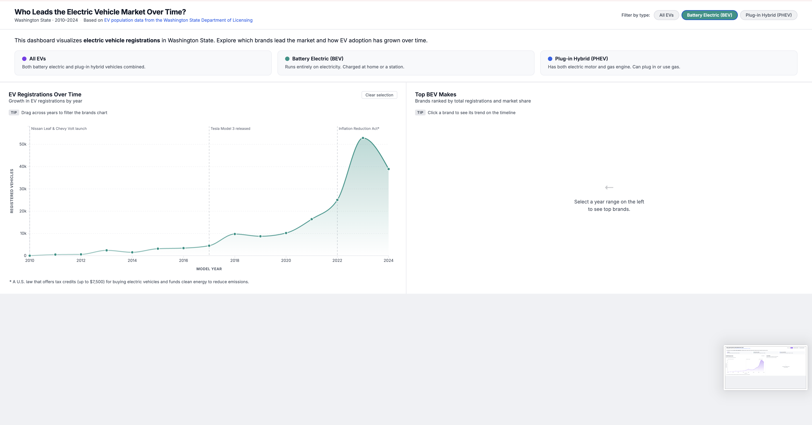
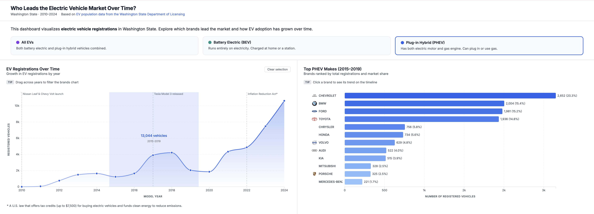
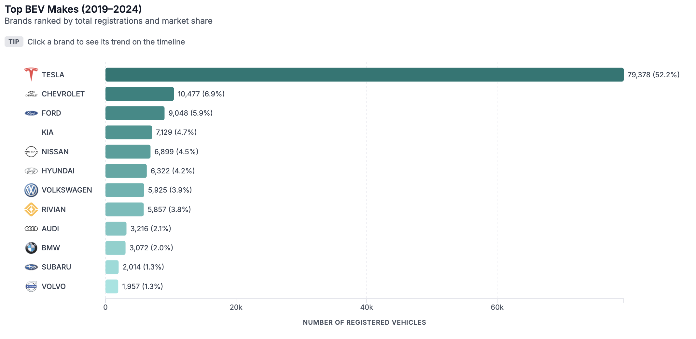
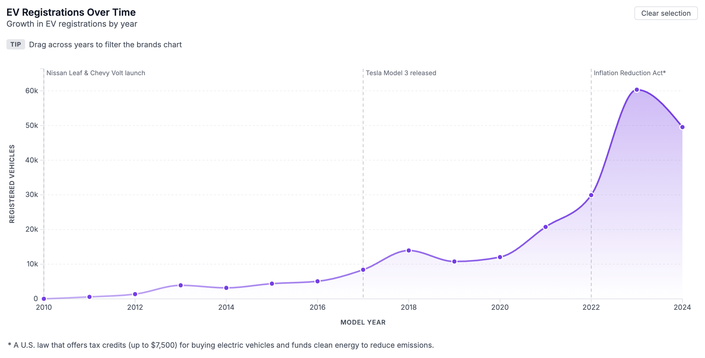

Author: Alyona Voskobpinikova
Course: Data Visualization (D3)
Date: May 2026
Dataset: Washington State EV Population Data
Visualization: https://alyonavosko.github.io/ev-visualization/
The visualization was developed through a deliberate and iterative process with the primary goal of improving clarity, usability, and interpretability. Early versions included additional charts and more complex layouts. While these versions displayed more data, they created confusion and made it difficult to understand how different components related to each other. The design was therefore simplified to two coordinated views: a timeline on the left and a ranking chart on the right.
This structural decision was intentional. The timeline acts as the primary control, while the ranking chart reflects the result of that interaction. This creates a clear and logical relationship between actions and outcomes. Users select a time range and immediately see how brand rankings change. This approach reduces ambiguity and ensures that the interface communicates its purpose without requiring extensive instructions.

two coordinated views: a timeline on the left and a ranking chart on the right.
At the beginning of the project, I explored a more complex layout that included three charts: a bar chart, a line chart, and a scatter plot. The goal was to show relationships between vehicle range, time, and brand distribution simultaneously. However, this approach introduced too much visual complexity and made it difficult to understand how the charts were connected.
Through testing and iteration, it became clear that users did not immediately understand how to interact with the visualization or where to focus their attention. As a result, the design was simplified to two coordinated views. This allowed for a clearer interaction model and a more focused analytical experience.
Initial sketches were used to explore layout options and interaction flow. These sketches helped guide the transition from a multi-chart layout to a more structured and intuitive design.

Removed scatter plot view
The interaction model was designed to be direct and intuitive. Instead of relying on external controls such as dropdown menus, the visualization uses actions that are embedded directly within the charts. Users drag across the timeline to define a time range. This interaction updates the ranking chart in real time.
The decision to leave the ranking chart empty by default reinforces this relationship. It signals that the user must first make a selection. This avoids presenting information without context and encourages active exploration.
Single-selection behavior was implemented in the ranking chart to maintain clarity. When a user selects a brand, that brand becomes the focal point. All other brands are visually de-emphasized using a neutral grey color. This ensures that attention is directed toward the selected data while still preserving context. The interaction is reversible, which allows users to explore multiple brands without losing their place.

ranking chart
Color was treated as a primary encoding mechanism rather than a decorative element. A strict and consistent color mapping was established across the visualization.
Purple represents all electric vehicles as an aggregate category. This color functions as a neutral reference point. Teal represents battery electric vehicles. This choice aligns with common associations between green-blue tones and sustainability. Blue represents plug-in hybrid vehicles. This reflects the dual nature of hybrid systems and aligns with common technological associations.
Inactive elements are shown in grey. This prevents unnecessary visual competition and ensures that active data stands out clearly. The consistent use of grey for inactive states improves visual hierarchy and reduces cognitive load.
A gradient scale was applied to the ranking chart to reinforce differences in magnitude. Higher values are represented with darker shades, while lower values are represented with lighter shades. This allows users to quickly interpret ranking without relying solely on numeric labels. The gradient supports rapid visual comparison and improves scanning efficiency.

All EVs (aggregate)

Battery Electric Vehicles (BEV)

Plug-in Hybrid Vehicles (PHEV)
Significant attention was given to layout, spacing, and alignment. The goal was to eliminate visual clutter and ensure that all elements are easy to read and interpret.
The bars in the ranking chart were intentionally shifted to the right to create sufficient space for labels and logos. Fixed-width label areas were introduced to maintain consistent alignment. This prevents text from overlapping with other elements and ensures a clean visual structure.
Typography was adjusted to improve readability. Axis labels were added and scaled appropriately to ensure that users can interpret the data without difficulty. Margins were standardized across both charts to create visual balance. These adjustments may appear minor individually, but collectively they contribute to a more polished and professional presentation.
Brand logos were incorporated to improve recognition and usability. This decision is based on a well-established principle in user experience design: recognition is faster and more efficient than recall.
Text labels require users to read and process information. Logos provide immediate visual identification. This is particularly valuable in a ranking chart where users need to scan and compare multiple items quickly. The inclusion of logos reduces cognitive effort and improves interaction speed.
Logos were carefully sized and positioned to maintain consistency. Each logo is constrained to a fixed maximum width to ensure uniform appearance across brands. Spacing between logos, labels, and bars was adjusted to prevent overlap and maintain clarity.

Brand logos improve recognition and reduce the need for reading labels
Annotations were added to provide context for key changes in the data. Without contextual information, the visualization shows trends but does not explain their causes.
Three major events were highlighted. The introduction of early electric vehicles in 2010 marks the beginning of adoption. The release of the Tesla Model 3 in 2017 represents a significant shift in the market. The Inflation Reduction Act in 2022 reflects the impact of policy on adoption.
These annotations allow users to connect patterns in the data to real-world events. This enhances the analytical value of the visualization and supports deeper understanding.

Annotations connect trends in the data to real-world events
A large number of smaller refinements were implemented to improve overall usability. These changes focus on reducing friction and improving clarity during interaction.
Spacing between elements was adjusted to prevent overlap and improve readability. Label alignment was standardized to create a consistent structure. Hover interactions were refined to ensure that tooltips appear reliably across all data points. Selection feedback was made persistent so that users can clearly understand the current state of the visualization.
The highlighted time range displays the total number of vehicles within the selected period. This information remains visible after selection, which eliminates the need for repeated interaction and supports better interpretation.
The visualization was used to explore how electric vehicle adoption has evolved over time and which brands dominate the market during different periods.
The brushing interaction allows comparison between different time periods. By selecting earlier years, users can observe a more competitive market, while selecting recent years reveals strong dominance by a few brands.
Clicking a specific brand allows further analysis by showing its trend over time compared to the overall market, making it possible to understand both market leadership and growth patterns.


The final visualization emphasizes clarity, consistency, and usability. Each design decision supports the goal of making the data easier to understand and explore.
The interaction flow is clear and predictable. The color system is meaningful and consistent. The layout supports readability and reduces visual clutter. Logos and annotations enhance recognition and context.
As a result, the visualization allows users to quickly identify patterns, compare brands, and understand how the electric vehicle market has evolved over time.